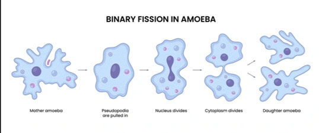
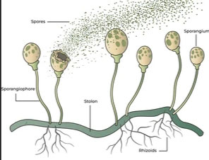
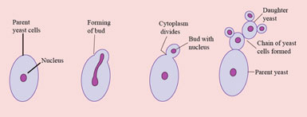
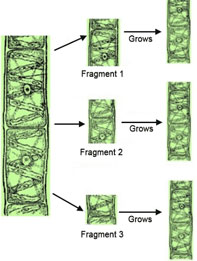

Notion And Types Of Reproduction In Plants
Definition of reproduction
Reproduction is the process by which living organisms produce new individuals of their species.
Importance of reproduction
- It increases or maintains the population size of the species of an organism.
- It replaces dead members of a species thereby preventing extinction.
- It improves the quality of species through exchange of genetic material.
Types of reproduction
There two types of reproduction namely: asexual and sexual reproduction.
Asexual reproduction
Asexual reproduction is production of new offspring from by a single parent without gamete formation. The offspring are genetically identical to the parent.
Characteristics of asexual reproduction
- It involves only one parent.
- Gametes are not involved.
- No fertilzation.
- Offspring are genetically identical to the parent.
- Many offspring are produced.
- Mitosis is invovled.
Types of asexual reproduction
- Fission
- It involves the division of a cell into two or more daughter cells. If two daughter cells are produced, it is known as binary fission and if more than two daughter cells are produced, then it is called multiple fission
- Binary fission occurs in unicellular organisms such as Amoeba and Paramecium, while multiple fission occurs in malaria parasite (Plasmodium)

Binary fission in Amoeba
- Sporulation
- It involves the formationo of unicellular bodies called spores. They are usually formed by mitosis.
- The spores are produced in large numbers. They are light and easily dispersed by air currents. When the spores fall on suitable substrate, they germinate into new organisms.
- Sporulation occurs in organisms such as bacteria, protozoan, fungi, mosses and ferns.

Sporulation in Bread mould
- Budding
- It involves the formation of an outgrowth on the parent, which later detaches and becomes an independent organism. The new organism is genetically identical to the parent.
- The new daughter cell produced is usually smaller than the parent.
- Budding occurs in organisms such as Yeast, Hydra and Obelia

Budding in Yeast
- Fragmentation
- It involves the breakage of a parent organism into smaller fragments, which later grow into new organisms.
- Fragmentation occurs in in organisms with undifferentiated tissues such as algae (e.g. Spirogyra), sponges, and flat worms.

Fragmentation in Spirogyra
- Vegetative propagation
- Vegetative propagation is a form of asexual reproduction in which new plants develop from vegetative parts of a parent plant,
such as the stem, root, or leaf. The offspring are usually genetically identical to the parent plant.
- There are two types of vegetative propagation namely natural and artificial vegetative propagatioin
- Natural vegetative propagation occurs through strutures such as:
- Runner or stolon This is a long, horizontal stem that grows along the soil surface. New plants develop at the nodes .e.g. strawberry
- Rhizome It is horizontal underground stem that stores food. It produces shoots and roots at its nodes e.g. ginger
- Tubers It is swollen underground stem used for food storage. Buds, called “eyes,” grow into new plants.e.g. potato
- Bulbs It is a short stem surrounded by fleshy leaves that store food. It produces new shoots e.g. onion
- Suckers It is young shoot that grows from the base of the parent plant or from an underground stem. e.g. banana. Suckers do not store food.
- Corms It is a swollen underground stem with terminal buds that produce aerial shoots. Adventitious roots arise randomly from the stem e.g. cocoyam